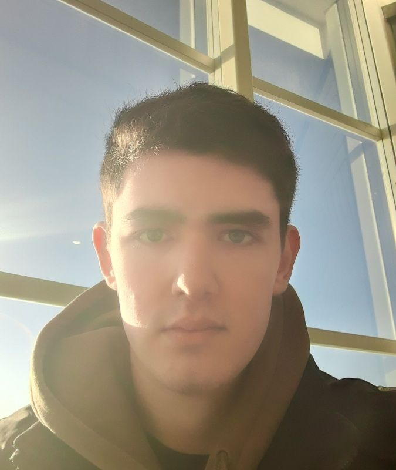

Integrantes do Grupo

Rafael
Estudante de Análise e Desenvolvimento de Sistemas, focado em compreender a tecnologia a partir dos seus fundamentos lógicos. Divide o seu tempo livre entre a música ao piano, montagem de hardwares e a exploração do design criativo e narrativo de jogos.

Eduardo Teixeira Ramos
Estudante de ADS, focado em engenharia de software pura e desenvolvimento web sem automações exageradas. Entusiasta de hardware de alta performance e engenharia automotiva avançada nas horas vagas.

Luis Eduardo Rissardo
Estudante de ADS, apaixonado pelo estudo da lógica fundamental de programação e arquitetura de computadores. Dedica o seu lado criativo à escrita e direção de roteiros para jogos digitais e setups de áudio de alta fidelidade.